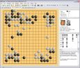
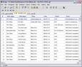
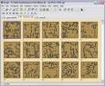
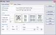
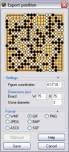
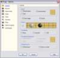

Drago
Drago

Recursos

Ejemplos de impresión y exportación

Versión corriente
La versión corriente de Drago es la 4.23. Consulte el histórico para la descripción de las modificaciones más recientes.
¿Que es?
Drago es un programa freeware Windows dedicado al juego de Go que permite:
- visualizar y editar ficheros de juegos,
- imprimir y exportar,
- crear bases de datos de partidas y buscar partidas con una posición particular o buscar por nombres de jugadores, fecha, resultado, etc ...
- jugar de nuevo partidas registradas,
- solucionar problemas,
- jugar con motores de juego.
Y también:
- Unicode
- Interfaz con pestañas
- Exportación de los ficheros en formato RTF, PDF, HTML et Word
- Exportación de las figuras en formato WMF, BMP, JPEG, GIF, PNG y ASCII
- Instalación estándar, desinstalación completa
- Conformidad con el formato SGF
- Lee ficheros multi partidas y repertorios
- Instalación con una base de partidas (en formato SGF y base de datos) y cuatro bases de problemas
- ... y más.
Instalación
Necesita:
- Cargar la última versión
- Descomprimir y lanzar el programa de instalación
Para jugar con un motor de juego (GNU Go, Go169, MoGo), se necesita cargarlo y declararlo en la pestaña "Motor de juego" de las opciones. Los motores de juego corrientes están predefinidos y no es necesario entrar las lineas de comandos. Esto está descrito aqui.
libkombilo
Drago está instalado con la biblioteca libkombilo. Esta biblioteca open source está desarrollada por Ulrich Goertz y permite utilizar todas las funciones de su programa de base de datos Kombilo.
Enlaces
Solo algunos enlaces generales o ofreciendo recursos bien adaptados a Drago están listados aqui.
Recursos
Puede también consultar la página de recursos para encontrar:
- una colección de imagenes de textura de madera (también disponible en la instalación)

- un script Perl de conversión de los ficheros goproblems.com en colecciones SGF
- una collección de problemas sobre tableros 4x4 extraídos de goproblems con el script mencionado previamente.
Hacer click en los pies

Ventana principal

Vista de las informaciones

Vista de las miniaturas

Parametros de disposición para imprimir

Exportación de una posición

Optiones